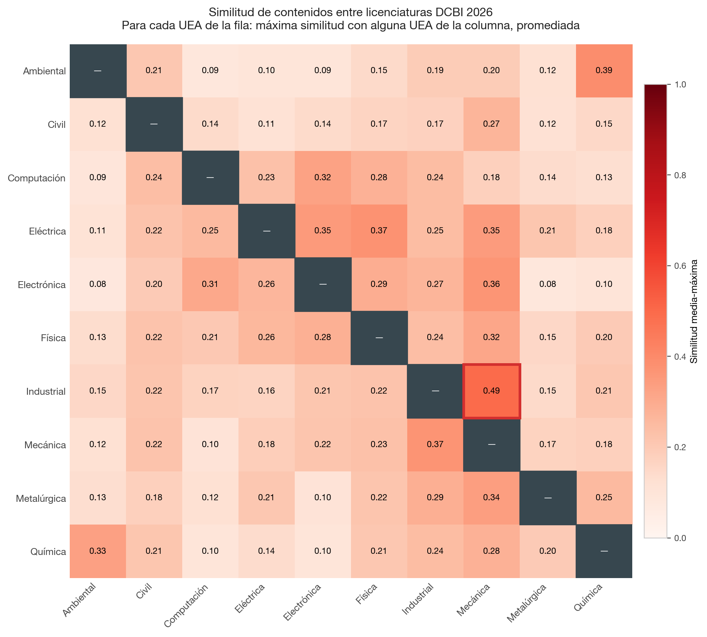
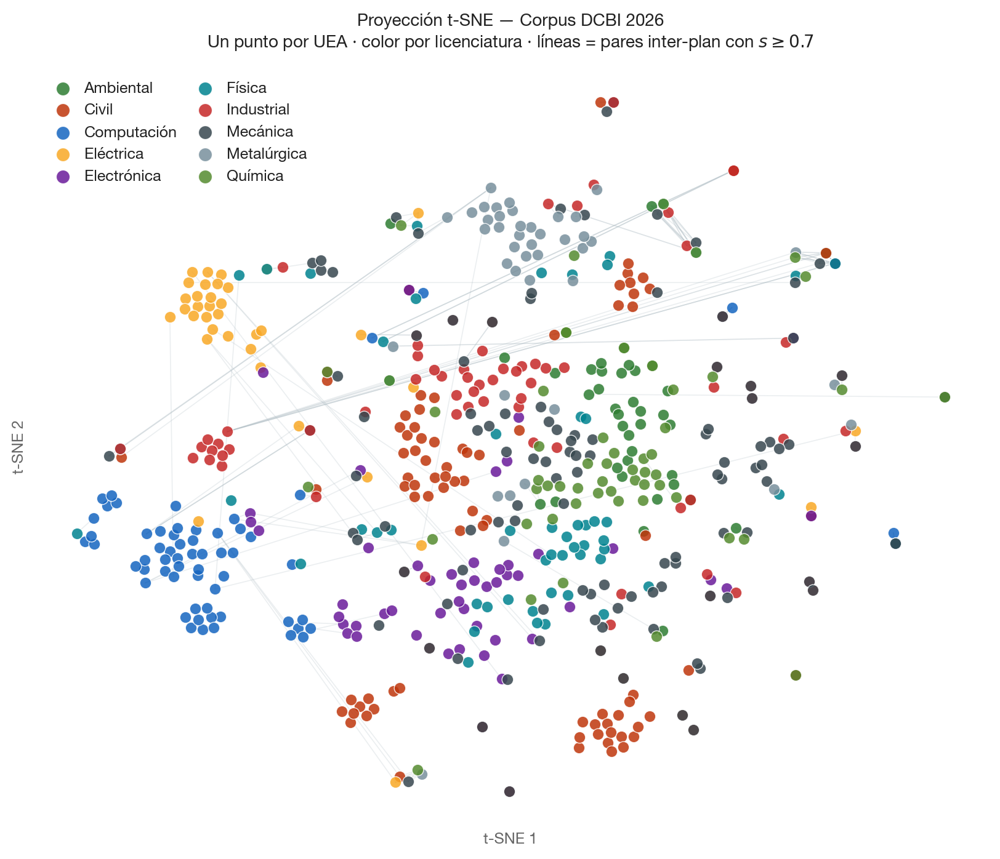
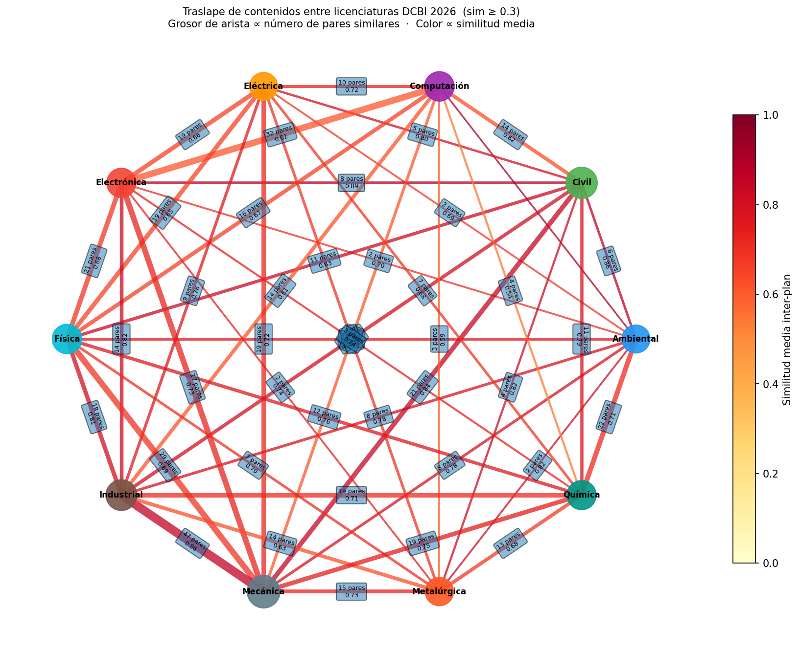

Similitud de contenidos entre licenciaturas
391 pares similaresEl análisis comparó los programas de UEA entre los diez planes de estudio. El par con mayor similitud es Industrial–Mecánica (38 programas equivalentes). La figura interactiva muestra cuántos pares equivalentes (puntuación ≥ 0.70) existen entre cada par de licenciaturas.
Distribución de niveles de similitud
1,505 pares evaluadosDe los 1,505 pares candidatos evaluados con inteligencia artificial, 203 resultaron idénticos o casi idénticos (puntuación ≥ 0.85) y 186 con similitud muy alta (0.70–0.84). El 22% de los pares evaluados no mostraron traslape relevante de contenidos.
Distribución de niveles de similitud · 1,505 pares
Interactivo🎨 Escala de similitud
Figuras interactivas de análisis
4 visualizacionesCada figura explora una dimensión distinta del análisis de similitud: desde la vista global de la matriz de similitud entre planes, hasta el agrupamiento jerárquico de las 120 UEAs más conectadas y la red de vínculos entre licenciaturas.

InteractivoSimilitud promedio entre los diez planes
Mapa de calor 10×10. El rojo intenso indica mayor similitud. La diagonal (cada licenciatura consigo misma) siempre es roja — ignórala y busca las celdas oscuras fuera de ella.

InteractivoMapa de agrupamiento t-SNE
Cada punto es una UEA. El algoritmo acerca los programas de contenido similar y aleja los distintos. Los cúmulos de un mismo color revelan familias de contenidos compartidos.

InteractivoRed de conexiones entre licenciaturas
Cada nodo es una licenciatura. Las aristas conectan pares con al menos un programa equivalente. Las licenciaturas más conectadas comparten más contenidos con el resto de la División.
 Interactivo
Interactivo
Agrupamiento jerárquico de las 120 UEAs más conectadas
Las 120 UEAs con más pares similares, agrupadas automáticamente por contenido (método Ward, s ≥ 0.40). La barra lateral de color identifica la licenciatura de cada programa.
Análisis de duplicación y similitud semántica entre UEAs · 35 pp. · PDF
Las UEAs identificadas como idénticas o muy similares entre planes son exactamente las que aparecen como cuellos de botella en el Metaanálisis — materias del Tronco General que concentran alta demanda y llenan sus grupos rápidamente en el CAT. Los tres análisis apuntan al mismo núcleo estructural de la División.